Formats d'imatge¶
Hi ha dos grans tipus de formats d’imatges, formats de mapes de bits i formats vectorials.
- Imatge del mapa de bits <https://es.wikipedia.org/wiki/imagen_de_mapa_de_bits>
Les imatges del mapa de bits, també anomenades ** Raster **, estan formades per molts punts de color anomenats píxels, que formen una fotografia o un dibuix. Quan aquest tipus d’imatge s’amplia, podeu veure els diferents píxels de la imatge com a elements diferents. Això empitjora la qualitat de la imatge en aquests casos.
Un exemple d’imatge del mapa de bits són les imatges preses per una càmera digital o un escàner.
- `` Format d'imatge vectorial <https://es.wikipedia.org/wiki/gr%C3%A1ficia_vecorial>`__
Les imatges vectorials estan formades per instruccions que determinen l’aparició d’objectes com línies, cercles, quadrats o corbes de Bézier. Quan aquest tipus d’imatge s’amplia, les línies i les corbes es mantenen amb la mateixa qualitat, sense veure punts que formen la imatge.
Es pot trobar un exemple de imatge vectorial a les lletres Truetype d’un editor de text o d’un document PDF. Aquestes cartes poden ampliar tot el que vulgueu sense perdre mai la vostra qualitat.
{kind=link}
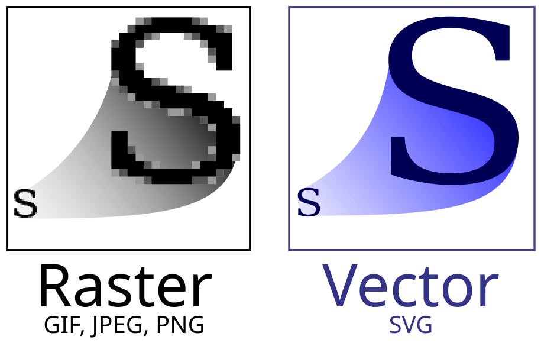
Diferència entre una imatge del mapa de bits (ràster) i una imatge vectorial (SVG).¶
Índex de contingut:
Esquemes de colors¶
Hi ha dos esquemes de colors grans, l’additiu i el subtractiu. Cadascun d'ells té un camp d'aplicació diferent i és convenient utilitzar -les en el seu camp, per obtenir els millors resultats.
{kind=link}
- Esquema de colors additius RGB
Aquest esquema s’anomena additiu perquè genera els diferents colors ** afegint ** fonts de llum. És l’esquema que s’utilitza en monitors, pantalles telefòniques o pantalles telefòniques.
Els colors principals dels quals es formen tots els altres són ** vermell ** (xarxa), ** verd ** (verd) i ** blau ** (blau). D’aquests tres colors prové el nom RGB.
Aquest esquema funciona basat en el fet que l’ull humà té tres receptors de colors (vermell, verd i blau) que utilitza per detectar tots els colors de l’arc de Sant Martí a partir d’una combinació de tots ells. Així, el nostre ull percep el color groc com una combinació de llum vermella més llum verda.
Els colors secundaris es formen afegint dos colors primaris:
Vermell + verd = groc
Vermell + blau = magenta
Verd + blau = cian
Vermell + verd + blau = blanc
Absència de color = negre
- Esquema de colors subtractius CMYK
Aquest esquema s’anomena subtractiu perquè genera els diferents colors que reflecteixen la llum blanca, que conté tots els colors, excepte algun color robat amb una tinta. Per exemple, la tinta groga reflectirà tota la llum blanca que arriba a ella, excepte el color blau, que es roba o s’absorbeix dins de la tinta. Aquest és l’esquema de colors que s’utilitza a la impremta.
Els colors principals dels quals es formen tots els altres són ** cian ** (cian), la magenta (Magent), el ** groc ** (groc) i el color ** negre ** (clau). Si les tintes fossin perfectes, podrien obtenir el color negre afegint -ne totes (CMY), però a la pràctica és més fàcil i sembla més fosc quan s’utilitza una tinta específica per obtenir el color negre.
Els colors secundaris s’obtenen barrejant tintes i, per tant, absorbint més d’un color. Dels tres colors que la llum blanca (vermell, verd i blau) té la tinta groga absorbeix blau, la tinta cian absorbeix el vermell i la tinta magenta absorbeix el verd. En barrejar tintes grogues i cianes, el blau i el vermell s’absorbeixen, deixant només el color verd com a resultat final.
Aquest esquema s’utilitza per a la impressió de revistes, llibres, fulletons, pòsters i tot tipus de treballs d’impressió. També és la base de les impressores de colors i les pintures a l’oli, les aquarel·les, les ceres, etc.
Els colors secundaris es formen afegint dos colors primaris:
Cian + magenta = blau
Cian + groc = verd
Magenta + groc = vermell
Cian + magenta + groc = negre
Absència de color = blanc
Profunditat de color¶
La profunditat del color fa referència al nombre de colors diferents que pot mostrar una imatge. La profunditat de colors més baixa és la d’una imatge que només funciona amb 2 colors (blanc i negre).
La profunditat de color a les imatges de la càmera estàndard de la càmera és de 8 bits (256 nivells) per a cadascun dels tres tons RGB, amb un resultat total de 24 bits o 16 milions de colors diferents.
Finalment, les càmeres professionals poden prendre imatges de tipus brut amb fins a 14 bits (16384 nivells) per a cadascun dels tres tons RGB, amb un resultat total de 42 bits o 4.000 milions de colors diferents. A la pràctica, aquesta profunditat de color no es pot representar en paper o podem apreciar -la, però us permet treballar amb la imatge per editar -la o “revelar -la” ja que ens convé sense pèrdues de qualitat.
- De profunditat de color de 1 bit
2 colors.
Aquesta profunditat de color s’utilitza per enviar fax, emmagatzemar text o dibuixos senzills. L’avantatge que presenta és que ocupa molt poc espai.
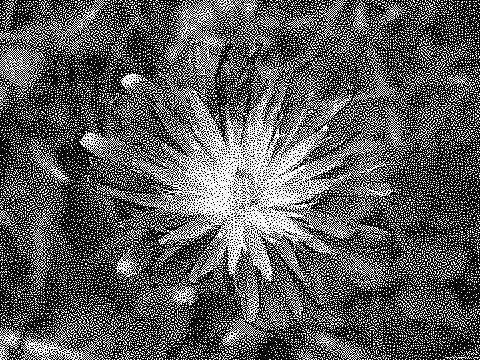
- Profunditat de color de 4 bits
16 colors.
És una profunditat de color massa baixa i presenta errors evidents a la imatge, però es pot utilitzar en documents per representar el color amb una mida total més petita.
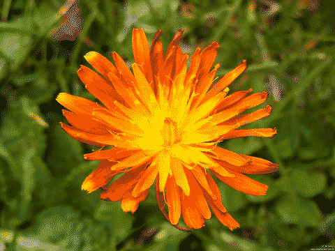
- Profunditat de color de 8 bits gris
256 tons de gris.
Amb prou feines té pèrdues de qualitat en tons, però no permet representar el color.
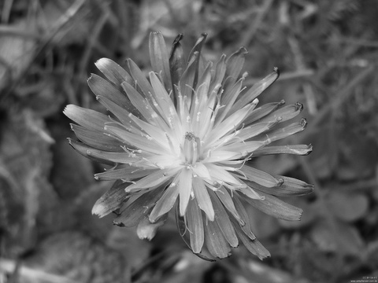
- Profunditat de color de 8 bits
256 colors.
Aquest és l’estàndard d’imatges del format GIF. Permet que es representin prou colors de manera que no hi hagi molta pèrdua de qualitat, amb l’avantatge de permetre reduir la mida de la imatge respecte al veritable color (color veritable).
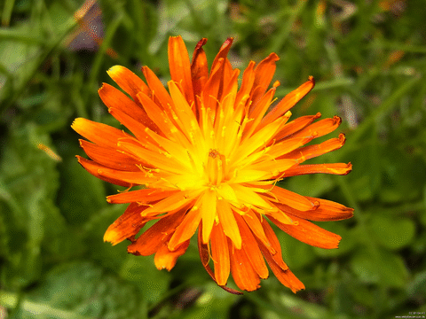
- Profunditat de color de 24 bits
16 milions de colors (256 tons de vermell, 256 verd i 256 blau).
També es diu veritable color o ** color veritable **. Aquest és l’estàndard de les imatges amb format JPEG. Té una qualitat suficient per emmagatzemar fotografies, però no té tanta qualitat per realitzar operacions d’edició d’imatges sense perill de perdre la precisió.
- Profunditat de color de 36 a 48 bits
14 bits per a cada to RGB = 42 bits o 4.000 milions de colors.
Els esquemes amb el major nombre de colors que els de 8 bits per a cada to RGB no tenen diferències apreciables per a l’ull humà.
Quan una imatge té més de 8 bits per to RGB, les operacions d’edició d’imatges es poden dur a terme amb menys pèrdua de qualitat que a les imatges amb menys colors, que no són adequats per a l’edició d’operacions.
Formats de mapes de bits¶
Els formats següents de les imatges del mapa de ** bits ** estan compostos per píxels o punts de la imatge que s’emmagatzemen un per un al fitxer fins que es finalitzi la imatge.
- JPEG (JPG)
El jpeg (grup de fotografies fotogràfiques conjuntes), creat el 1992, és un format de fitxer d’imatge que s’utilitza per emmagatzemar fotografies en un format comprimit. Aquest format de fitxer té pèrdues (és pèrdua), cosa que significa que es perd una certa informació sobre la imatge quan la comprimeix per ocupar menys espai, especialment en petits detalls, generant un soroll anomenat artefactes. Per això, aquest format no és una bona opció per desar imatges de dibuixos, text, gràfics, etc.
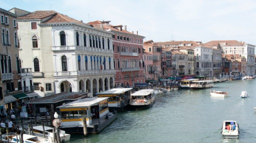
Fotografia emmagatzemada en format JPEG.¶
El format de fitxer JPEG es pot utilitzar per emmagatzemar imatges en diversos formats de colors, inclosos RGB de 8 bits per color, CMYK i YCBCR. La profunditat de color d’aquest format (8 bits per a cada to RGB) es redueix i, per tant, no és una bona opció per editar fotografies. Per a aquesta tasca, és molt millor utilitzar els formats crus de cada càmera que tinguin 36 o 42 bits per píxel.
El format JPEG no permet definir transparències a la imatge, de manera que no és una bona opció inserir imatges tallades. Per a aquesta tasca, és millor utilitzar un format que permeti transparències, com PNG.
- Pàg.
El png (gràfics de xarxa portàtil) es va crear el 1995 com a format d'imatge amb compressió i sense pèrdues, és a dir, no perd cap detall durant la compressió de la imatge.
El format PNG és ideal per emmagatzemar imatges de dibuixos o text, ja que, sense pèrdues, es guardaran sense soroll ni "artefactes ".
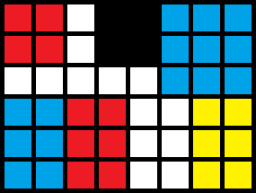
Imatge PNG d’una graella de colors.¶
Aquest format també és ideal per a imatges que utilitzen ** transparències **, ja que cada píxel es pot emmagatzemar al costat d’un codi de colors transparent que impedeix que es notin les vores.
Tot i que es pot utilitzar per estalviar fotografies, no és aconsellable perquè, sense tenir pèrdues, la seva mida és molt més gran que la de les imatges JPEG. Si el que es vol és estalviar una fotografia sense pèrdues per poder editar -la, és preferible utilitzar el format TIFF.
El format PNG pot desar les imatges amb diverses profunditats de color adaptades a cada aplicació. Amb colors en blanc i negre (1 bit per píxel), podeu emmagatzemar text o imatges similars amb un nivell de compressió molt alt. També podeu emmagatzemar gris o imatges amb una escala de colors veritable (RGB de 8 bits per color).
El format PNG no permet emmagatzemar els colors CMYK adaptats a la impressió de paper.
- Gif
El gif (intercanvi de format gràfic) va ser llançat el 1987 per Compuserve i és àmpliament utilitzat a Internet tant en imatges com en animacions a causa del seu ampli suport i compatibilitat.
Com a característica especial, aquest és l’únic format popular que pot estalviar imatges o animacions en moviment. Els vídeos amb imatges fotogràfiques apareixen amb una gran pèrdua de color, ja que aquest format només pot gestionar una paleta de 256, però això no ha impedit que s’utilitzi àmpliament.
El format GIF us permet estalviar dibuixos amb transparències, però amb una "pitjor qualitat que amb el format PNG de 24 bits <https://development.com/articulos/transparencia-formatos-raficos-weB-gif-png.html>`__.
L’aplicació principal del format GIF és emmagatzemar petits dibuixos i animacions amb o sense transparència.
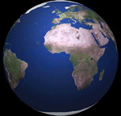
Zaqwerdx <https://commons.wikimedia.org/wiki/file:Rotating_earth_mini.gif> __, cc by-sa 3.0 <https://creativecommons.org/licenses/by-sa/3.0/deed.en> `` `` `` `` `` `` `` `` `` `` `` `` `` `` `` `` `` `` `` `` `` `` `` `` `` `` `` `` `` `¶
- Tetf
El tiff (format de fitxer d'imatge etiquetats) es va publicar a la seva versió 6 el 1992 i té un gran ús en la indústria gràfica i en fotografia professional per la seva versatilitat i compressió sense pèrdues.
És un format que ocupa molta memòria quan emmagatzema fotografies sense pèrdues, sobretot si s’utilitza una profunditat de color gran, amb 16 bits per a cada to de color RGB. Tot i això, aquestes característiques fan que el format TIFF sigui molt apreciat en l’edició fotogràfica professional i la fotografia científica.
- Cru
El Raw és un conjunt de formats utilitzats per càmeres fotogràfiques professionals i altes per salvar les imatges ja que han estat capturades pel sensor de la càmera. Tenen una gran profunditat de color (de 36 a 48 bits per píxel) i s’emmagatzemen sense pèrdues, de manera que cada fitxer ocupa una mida gran en comparació amb la imatge equivalent del format JPEG.
Aquest format permet processar o revelar una imatge de manera que tingui més o menys lluminositat o més o menys dinàmic, sense qualitat perduda en el resultat final.
Les molèsties presentades per aquest format és la manca d’estandardització, de manera que cada fabricant utilitza la seva pròpia versió del format, que pot causar incompatibilitats o que alguna versió del format brut no es pot utilitzar en el futur.
- Resum dels formats d'imatge del mapa de bits.
Format Compressió Pèrdues Color Transparències Moviment Jpg Sí Sí RGB 8 bits per to
Cmyk
No No Pàg. Sí No 256 colors
RGB 8 bits per to
Transparència RGB +
Sí No Gif Sí No Només 256 colors Sí Sí Tetf Sí No 8 -bit RGB per to
Cmyk
No No Cru No No RGB de 12 a 16 bits per to No No Format Tipus d'imatge Jpg Fotografies Pàg. Dibuixos. Gif Dibuixos.
Imatges de moviment.
Tetf Fotografia professional.
Fotografia científica
Impressió en paper.
Cru Fotografia professional.
Comparació entre formats JPEG i PNG¶
A les imatges següents podem comprovar les diferències i la utilitat de cadascun dels formats d’imatge.
En desar textos o dibuixar imatges, sempre serà millor utilitzar el format PNG que ocuparà menys mida donant una millor qualitat.
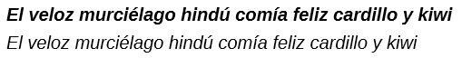
Fitxer d’imatge PNG 6KB, sense errors.¶
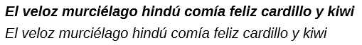
Fitxer d'imatge JPEG 7KB, amb "Artifactes ".¶
Fitxer d’imatge PNG de 210 bytes de mida, sense errors.¶
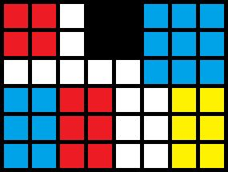
11284 Bytes de mida JPEG FILES, amb "artefactes ".¶
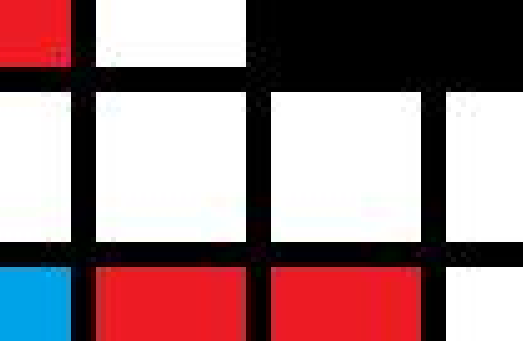
Quan estalvieu fotografies, sempre serà millor utilitzar el format JPEG que ocuparà menys mida donant una qualitat similar. En realitat, la qualitat del format JPEG serà menor, però no s’apreciarà amb l’ull nu.
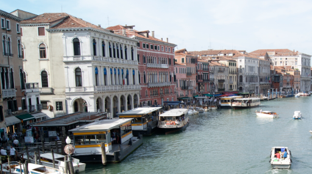
Fitxer d’imatge PNG de 262KB.¶
Fitxer d’imatge JPEG de 52KB.¶
Formats vectorials¶
Els formats d’imatges ** vectorials ** estan compostos per vectors, que són instruccions matemàtiques que es donen al navegador o als programes d’edició d’aquests gràfics perquè es puguin visualitzar. Aquestes imatges es poden escalar infinitament sense perdre la resolució ni la qualitat.
- Svg
El svg <https://es.wikipedia.org/wiki/gr%C3%A1Ficos_vectorials_escalable> __ (gràfics vectorials escalables) és un estàndard obert publicat pel consorci W3C el 1999 per distribuir imatges al web. Aquest format permet definir imatges vectorials en dues dimensions.
Les imatges SVG es poden manipular amb JavaScript, que és un llenguatge de programació, per crear animacions interactives als navegadors web.
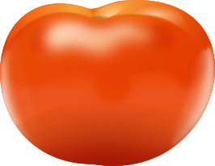
Stephen Winsor, GNU General Public License v3 <https://www.gnu.org/licenses/gpl-3.0.html> `, via wikimedia commons.¶
El estàndard pdf (format de document portàtil) és un format d’emmagatzematge de documents digitals dissenyat per Adobe de manera que es pugui visualitzar i imprimir fàcilment en qualsevol dispositiu.
PDF és un format normalitzat i obert perquè qualsevol ho faci servir lliurement.
Els documents desats en format PDF poden contenir text, hiperenllaços, gràfics, dibuixos, fotografies i fins i tot vídeo.
Aquest format té el gran avantatge de mantenir la composició de la pàgina sense canvis (marges, mides de lletres, imatges de les imatges, etc.) i ser un format àmpliament compatible i estàndard per emmagatzemar documents a llarg termini.
Com a desavantatge, el format PDF es pot editar amb dificultat, per la qual cosa és millor emmagatzemar el fitxer font original (.docx).
- Fonts tipogràfiques
Les fonts tipogràfiques vectorials són conjunts de símbols i lletres dissenyades per a ús de l’ordinador, tant per mostrar text en una pantalla com per imprimir en paper.
El fet de ser vectorial és fàcilment escalable, és a dir, les lletres i els símbols es poden representar de qualsevol mida sense perdre la qualitat.
Els formats més utilitzats per definir fonts són els següents.
Truetype (TTF): format desenvolupat per Apple i Microsoft a finals dels anys 1980. És àmpliament compatible i s’utilitza àmpliament en Windows i MacOS.
PostScript (PS): llenguatge desenvolupat per Adobe per imprimir amb impressores d'alta qualitat. Permet definir tipus de lletra, tot i que té moltes més aplicacions.
OpenType (OTF): format desenvolupat per Microsoft i Adobe el 1996 per millorar i succeir els dos formats anteriors.
Actualment és un estàndard obert (format de lletra obert), disponible públicament i gratuït.
Tex: És un sistema de tipografia escrit per Donald E. Knuth, molt popular a l'entorn acadèmic de la universitat. El sistema ** Latex ** Associated, amplia les capacitats TEX per a la composició de text professional.
Aquest sistema és ** programari gratuït **, de manera que qualsevol pot utilitzar -lo sense pagar una llicència.
{kind=link}
{kind=link}
Test de prova¶
`Prova del format d'imatge.